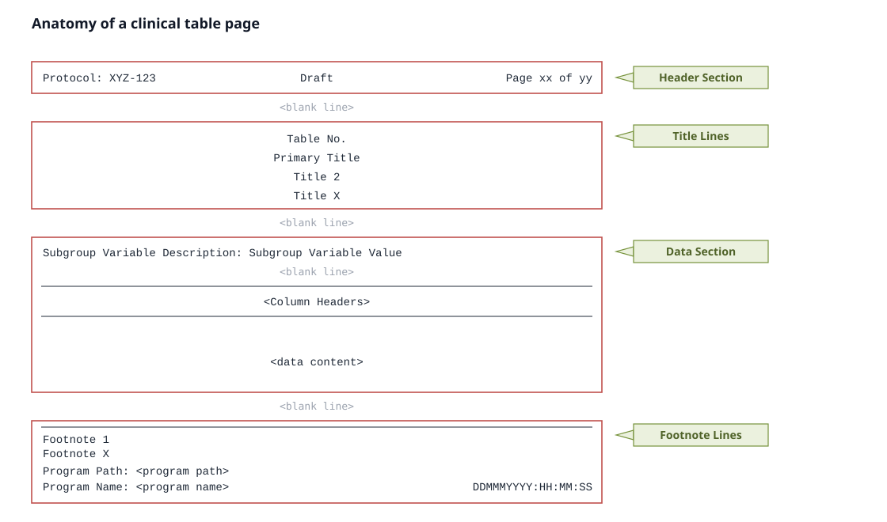
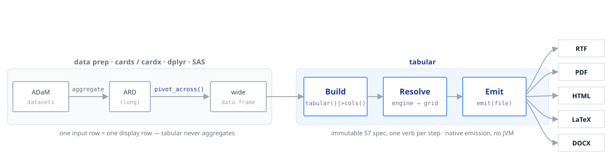

Four ideas explain almost everything in tabular. Once they click, the rest of the guide is just options.
1. The wide-data contract
tabular is a renderer, not a statistics engine. It assumes the numbers are already computed and laid out the way you want to display them: one row of input is one row of output, and each column is a value to show.
head(saf_demo, 6)
#> variable stat_label placebo drug_100 drug_50 Total
#> 1 Age (years) n 86 72 96 254
#> 2 Age (years) Mean (SD) 75.2 (8.59) 73.8 (7.94) 76.0 (8.11) 75.1 (8.25)
#> 3 Age (years) Median 76.0 75.5 78.0 77.0
#> 4 Age (years) Q1, Q3 69.2, 81.8 70.5, 79.0 71.0, 82.0 70.0, 81.0
#> 5 Age (years) Min, Max 52, 89 56, 88 51, 88 51, 89
#> 6 Age Group, n (%) 18-64 14 (16.3) 11 (15.3) 8 (8.3) 33 (13.0)There is no group_by, no counting, no percentages inside tabular. You produce that summary upstream — with cards, gtsummary, dplyr, or SAS — and hand the finished wide frame to tabular().
This is the most common beginner mistake
If you pass patient-level data (one row per subject),
tabularwill faithfully render thousands of rows. It is not broken — it is doing exactly what it promises. Summarise first, then render.
Coming from gtsummary or rtables?
Those packages compute the summary and render it in one step.
tabulardeliberately splits the two: bring your own summary, get submission-grade output across five formats.
2. The anatomy of a clinical table page
A submission table is not just a grid of numbers. It is a page with four stacked sections, and reviewers expect each one in its place:

tabular backend reproduces.- Header section — protocol, optional status, page x of y.
- Title lines — table number and up to four centred title rows.
- Data section — optional subgroup banner, the column-header band between solid rules, then the data.
- Footnote lines — user footnotes, then the program path, name, and timestamp.
Every tabular verb maps onto a piece of this picture: titles/ footnotes fill sections 2 and 4, headers() and cols() build the column band in section 3, subgroup() adds the banner, and preset() controls the page geometry that frames all four.
3. A pipeline of immutable verbs
You build a table by piping a tabular_spec through verbs. Each verb returns a new spec with one thing changed; the previous spec is never mutated.
base <- tabular(saf_demo) |>
cols(
variable = col_spec(usage = "group"),
stat_label = col_spec(label = "Statistic"),
placebo = col_spec(label = "Placebo", align = "decimal"),
drug_50 = col_spec(label = "Drug 50", align = "decimal"),
drug_100 = col_spec(label = "Drug 100", align = "decimal"),
Total = col_spec(label = "Total", align = "decimal")
)
is_tabular_spec(base)
#> [1] TRUEBecause specs are immutable, you can branch a common base into several variants without surprises — a safety table and its minimal-theme twin share the same base and diverge only at the last verb.
4. Three phases: Build, Resolve, Emit
Nothing is rendered while you pipe. The work happens in three phases:

-
Build — the verbs (
tabular(),cols(),headers(), …) accumulate an immutable spec. -
Resolve — the engine turns the spec into a
tabular_grid: it sorts rows, flattens headers, applies styles, formats and decimal-aligns cells, and paginates. - Emit — a backend serialises the grid to RTF, PDF, HTML, LaTeX, or DOCX.
emit() runs Resolve then Emit for you. To inspect the resolved grid without writing a file, call as_grid():
g <- as_grid(base)
is_tabular_grid(g)
#> [1] TRUEOne spec, five renderers
Resolve is backend-agnostic; only Emit differs per format. That is why the HTML you preview in a notebook and the RTF you ship come from the same resolved grid — the numbers and structure cannot drift between preview and deliverable.
5. Why decimal alignment (and monospace) matters
Submission numbers align on the decimal point so a reviewer can scan a column at a glance. tabular does this with the backend’s real font metrics, which is why the rendered table cells use a monospace face:
tabular(saf_aeoverall) |>
cols(
stat_label = col_spec(label = "Adverse Events"),
placebo = col_spec(label = "Placebo", align = "decimal"),
drug_50 = col_spec(label = "Drug 50", align = "decimal"),
drug_100 = col_spec(label = "Drug 100", align = "decimal"),
Total = col_spec(label = "Total", align = "decimal")
)| Adverse Events | Total | Placebo | Drug 100 | Drug 50 |
|---|---|---|---|---|
| Any TEAE | 217 (85.4) | 65 (75.6) | 68 (94.4) | 84 (87.5) |
| Any Serious AE (SAE) | 3 ( 1.2) | 0 | 1 ( 1.4) | 2 ( 2.1) |
| Any AE Related to Study Drug | 184 (72.4) | 43 (50.0) | 64 (88.9) | 77 (80.2) |
| Any AE Leading to Death | 3 ( 1.2) | 2 ( 2.3) | 0 | 1 ( 1.0) |
| Any AE Recovered / Resolved | 157 (61.8) | 47 (54.7) | 49 (68.1) | 61 (63.5) |
| Maximum severity: Mild | 77 (30.3) | 36 (41.9) | 20 (27.8) | 21 (21.9) |
| Maximum severity: Moderate | 111 (43.7) | 24 (27.9) | 40 (55.6) | 47 (49.0) |
| Maximum severity: Severe | 29 (11.4) | 5 ( 5.8) | 8 (11.1) | 16 (16.7) |
The counts and percentages line up on the decimal regardless of how many digits each value has — and they stay aligned when the table paginates onto a printed page.
Where to next
With the model in hand, the rest of the guide fills in the options:
- Columns & headers — the column surface.
- Rows, grouping & pagination — row order, groups, and page splits.
-
Styling —
style(), presets, and house styles. - Architecture — the engine phases in depth. ```